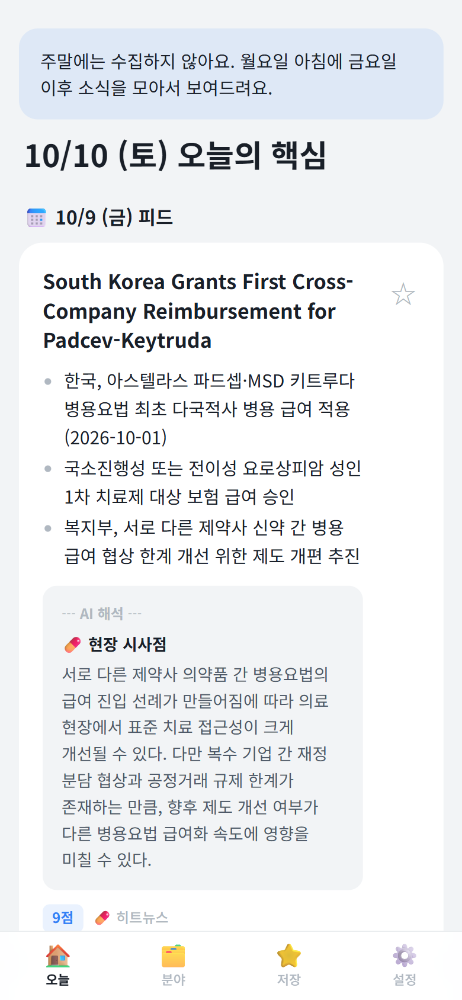
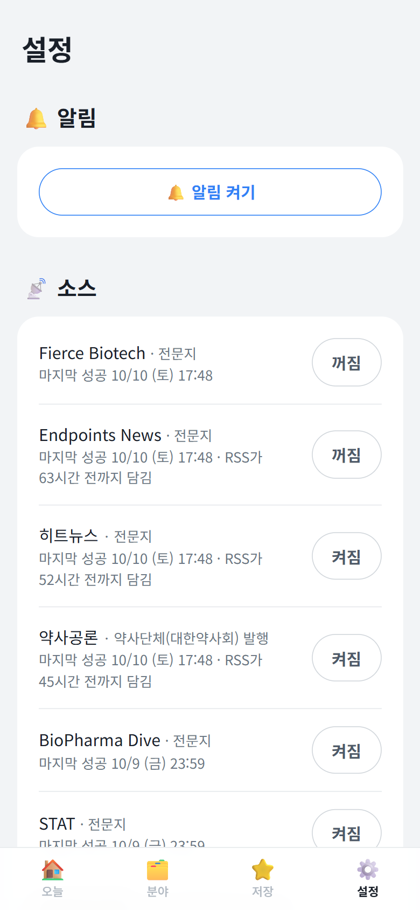
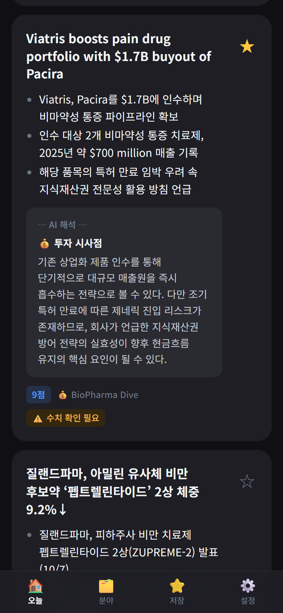
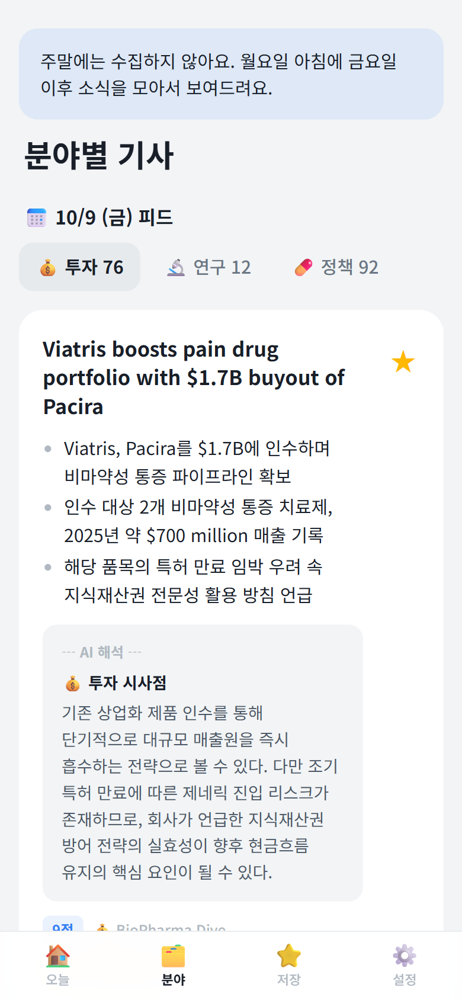
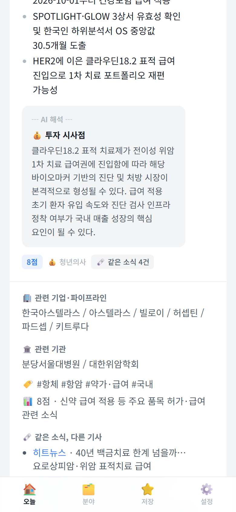
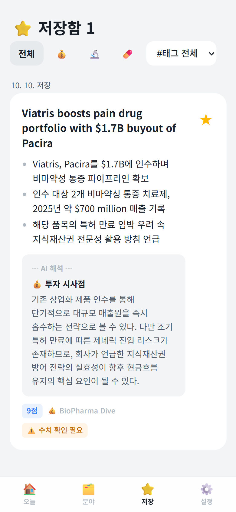

아침마다 도착하는
나만의 제약·바이오 브리핑
국내외 제약·바이오·약업계 뉴스를 새벽에 모으고, AI가 한국어로 요약해서 평일 아침 9시 전 아이폰으로 보여 주는 개인용 앱
정종인 · 차의과학대학교 약학 · 2026.09.19 기획 → 10.10 자동 운영

매일 10곳 넘는 매체를 다 볼 수 없었다
바이오 VC 진로를 준비하면서 투자·산업 동향을 보고, 약학 전공자로서 약업계·정책도 따라가야 했습니다.
💸예산 0원
Vercel · Supabase · Gemini · GitHub Actions 모두 무료 플랜
🙋사용자 1명
나만 쓰는 앱. 비밀번호로 잠그고, 저장소도 비공개
🌱코딩 입문자
계획을 먼저 세우고, 단계마다 동작을 확인하며 Claude Code와 함께 만듦
내가 자는 동안 일하는 앱
수집
12개 소스에서 새 기사 모으기, 중복 제거
GitHub Actions선별
전체 기사 분류 · 점수 · 한 줄 요약
Gemini Flash-Lite심층 분석
핵심 5~10건만 3줄 요약 + 시사점
Gemini Flash최근 3회분
저장한 기사만 영구 보관
Supabase (서울)아침 알림
“오늘의 핵심 N건” 푸시
Vercel Cron · PWA🗓️ 주말(토·일 09:17)에는 AI 없이 수집만 해 둡니다. RSS는 최근 32~63시간 분량만 보여 주기 때문에, 월요일에 몰아서 모으면 금요일 기사를 놓칩니다.
국내·해외 12개 소스를 매일 새벽에
RSS를 먼저 쓰고, RSS가 없는 국내 매체는 HTML 스크래핑(robots.txt 준수, 요청 간격 5초)으로 가져옵니다.
🔒 유료 기사 제외
내가 원문을 열어 볼 수 없는 기사는 요약하지 않음 (STAT+는 제목 패턴으로 거름)
🏷️ 매체 성격 표시
예: 약사공론은 “약사단체(대한약사회) 발행”. 기사의 이해관계를 함께 봄

싼 모델로 거르고, 좋은 모델로 깊게
1차 선별
Flash-Lite전체 기사 · 하루 500회
카테고리 💰투자 🔬연구 💊정책, 중요도 1~10점, 한 줄 요약
2차 심층
Flash핵심 5~10건 · 하루 20회
3줄 요약, 기업·기관, 태그, 카테고리별 시사점
🛟 과부하 대비
3.8 Flash가 503 오류 → 3.5 Flash → 그래도 안 되면 Claude Haiku 4.5(비상용, 유료). 재시도는 2회까지만 (실패도 하루 한도에 포함됨)
요약(원문에 있는 사실)과 AI 해석(시사점)을 화면에서 나눠, 어디까지가 기사이고 어디부터가 AI의 생각인지 구분합니다.
AI를 믿지 말고, 코드로 한 번 더 확인
🔢 숫자 + 단위 원문 대조
요약 속 금액·수치·날짜가 원문에 없으면 ⚠️ 수치 확인 필요 표시. 외화는 원문 표기를 그대로 씀 ($80 million을 8천만 달러로 바꾸지 않음)
🚫 과장 표현 금지
“입증하였다”, “독점 구도”, “될 것이다” 같은 표현을 금지어로 검사하고, 시사점은 가능성 표현으로 끝냄. 매수·매도 추천 금지
🔗 링크는 AI를 거치지 않음
AI가 주소를 지어내지 못하도록, 원문 링크는 코드가 기사 번호로 붙임
프롬프트 규칙 20여 개는 모두 테스트에서 실제로 실패한 사례에서 나왔습니다.

하루 5~10건만, VC의 눈으로 고르기
💰 기술이전은 총액이 아니라 계약금
계약금 1억 달러 이상 9~10점, 1,000만 달러 이상 7~8점, 미공개는 최대 6점
⚖️ 나쁜 소식도 같은 무게
권리 반환, 임상 보류·실패, 허가 거절도 좋은 소식과 같은 기준으로 점수를 매김. 2상 결과는 핵심 변곡점
📌 분야별 최소 1건 보장
7점 이상에서 5~10건을 고르고, 빠진 분야(💰🔬💊)가 있으면 그 분야 최고점 기사를 추가

같은 소식은 한 장으로, 논문은 확인된 것만
🗞️ 같은 사건 묶기
여러 매체의 같은 사건을 카드 한 장으로 접고, “같은 소식 N건”에 다른 매체 링크를 보여 줌. 10/9 실제: 24묶음, 43건 접힘
🧪 AI가 헷갈려서 코드가 검증
처음에 다른 회사 기사가 섞임 → AI가 묶음마다 회사 이름을 내고, 그 이름이 제목·요약에 실제로 있는 기사만 묶음
📄 근거 논문 (PubMed)
임상 결과·논문 발표 기사만 검색. 초록과 기사를 비교해 같은 연구일 때만 연결. 10/9 후보 2건(다른 시험의 논문)은 정확히 걸러냄

앱스토어 없이 아이폰 홈 화면에
📱 PWA
Safari → 공유 → 홈 화면에 추가. 비밀번호를 한 번 입력하면 90일 유지
⭐ 저장함
피드는 최근 3회분만 보관, 별표 누른 기사만 영구 보관 (분야·태그로 걸러 보기)
🙈 관련 없는 기사 숨김
AI가 제약·바이오와 관련 없다고 본 기사는 숨기고 설정에서 따로 확인 (10/9: 28건)
🎨 토스 스타일 + 다크 모드
Apple 스타일 → 토스 스타일로 교체. 카테고리 이모지는 출처 옆에

숫자로 보는 바이오 브리핑
실패가 규칙이 되었다
- 😵 10/5~10/9 앱이 “수집 실패”로 보임→알림(Vercel)과 수집(GitHub Actions)은 서로 다른 서비스. 수집 스케줄을 켜고 상태 확인 명령을 만듦
- 🔀 AI가 묶음 번호를 헷갈려 다른 회사 기사를 섞음→AI 답에 코드가 검증할 근거(회사 이름, 같은 연구 여부)를 함께 받음
- 📈 AI가 “입증”, “독점”처럼 과장하고 숫자를 나눠 씀→금지 표현 목록 + 숫자·단위 원문 대조 검사
- 🧭 무엇부터 만들지 막막함→코드보다 계획 먼저. 선택지와 추천안을 보고 한 번에 하나씩 결정